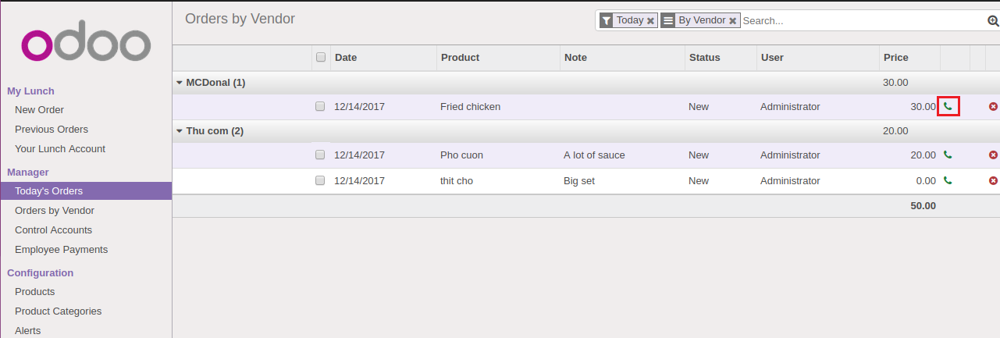
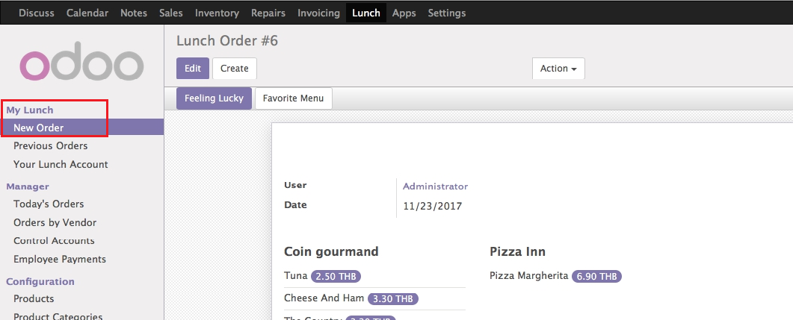
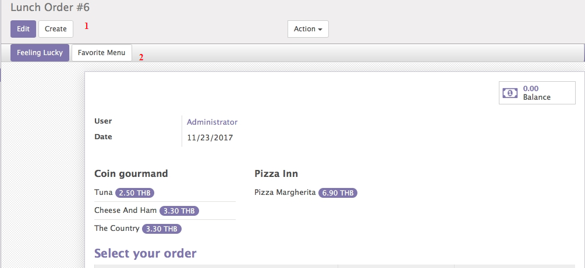
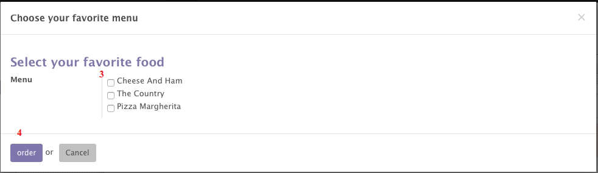

How to Send emails to vendors
FOR MANAGER ONLY
1. This feature is restricted to the group Manager only.
2. In order to send email to vendors, the email of vendors must be filled correctly.
Users access this feature by opening any views of Order lines such as: ‘Previous Order’, ‘Today’s Order’ and ‘Orders by Vendors’. To send emails to vendors, follow the below steps:
0. From ‘Lunch’ menu, go to navigator My Lunch, click on one the three menus: ‘Previous Order’, ‘Today’s Order’ and ‘Orders by Vendors’.

1. Click on the icon Order

Then the email is sent to the vendor, and the order line changes to ‘Ordered’ state.
How to Select Favourite Order lines
FOR EVERY USER
Prerequisites:1. This feature can be accessed by normal users
2. Users made orders before
This feature allows users to select order lines from the 3 most favourite orders in the past which have the biggest frequency among their order lines. To select order lines from the favourite order lines, follow the below steps:
0. From ‘Lunch’ menu, go to navigator My Lunch, click on New orders

1. Click on Create button to open ‘Create’ form
2. Click on ‘Favorite Menu’ button

3. Select order lines,
4. Click on ‘Order’ button

5. Click on ‘Save’ button
Then the order is created successfully.